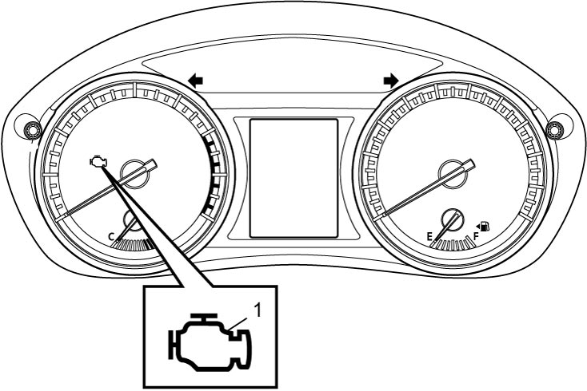

1A
| MIL Check |
NOTE:
For type distinction of OBD system, refer to “Discrimination for OBD System” under OBD System Description:M16A.
1)Set ignition “ON” (with engine at stop) and check that MIL (1) lights.
If MIL does not light up but engine can be started, go to MIL Does Not Come ON with Ignition “ON” and Engine Stopped (but Engine Can Be Started):M16A for troubleshooting.
If MIL does not light with ignition “ON” and engine does not start though it is cranked, go to ECM Power Supply and Ground Circuit Check:M16A.
If MIL does not light up but engine can be started, go to MIL Does Not Come ON with Ignition “ON” and Engine Stopped (but Engine Can Be Started):M16A for troubleshooting.
If MIL does not light with ignition “ON” and engine does not start though it is cranked, go to ECM Power Supply and Ground Circuit Check:M16A.
2)Start engine and check that MIL turns off.
If MIL remains on and no DTC is stored in ECM and TCM (type A-A/T model in Section 5A), go to MIL Remains ON after Engine Starts:M16A for troubleshooting.
If MIL remains on and no DTC is stored in ECM and TCM (type A-A/T model in Section 5A), go to MIL Remains ON after Engine Starts:M16A for troubleshooting.

 "Expand image")